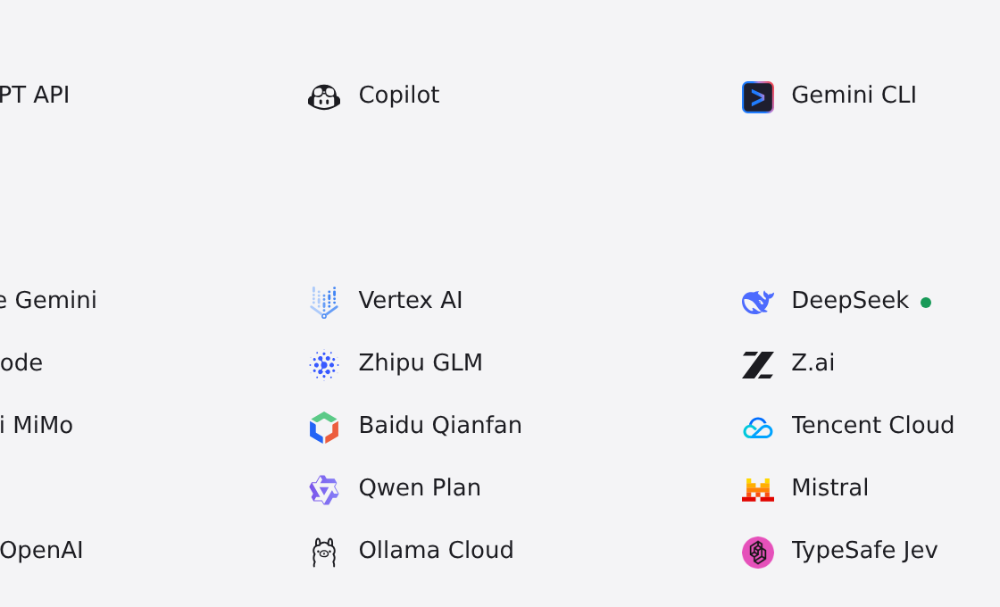
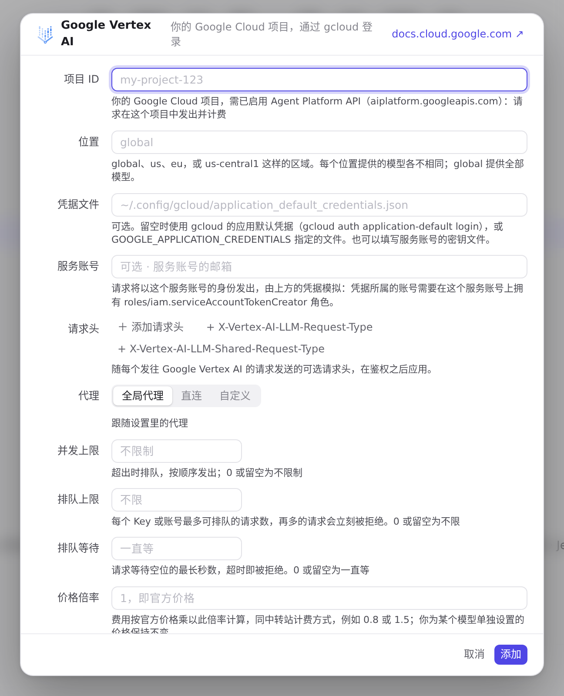
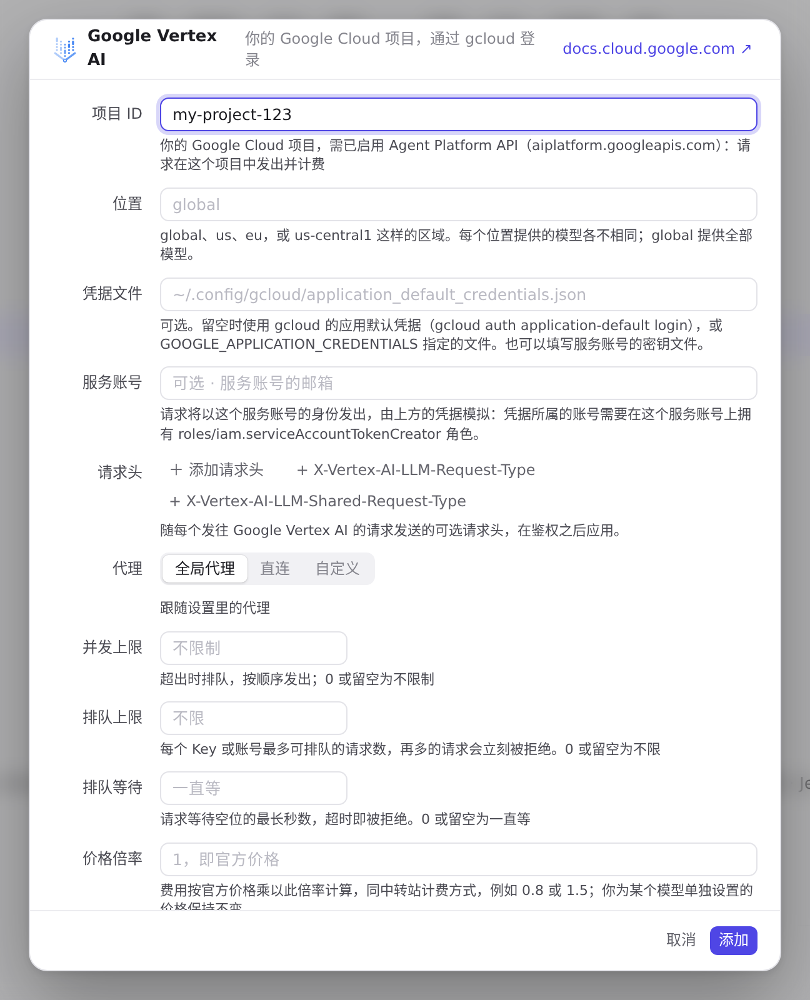
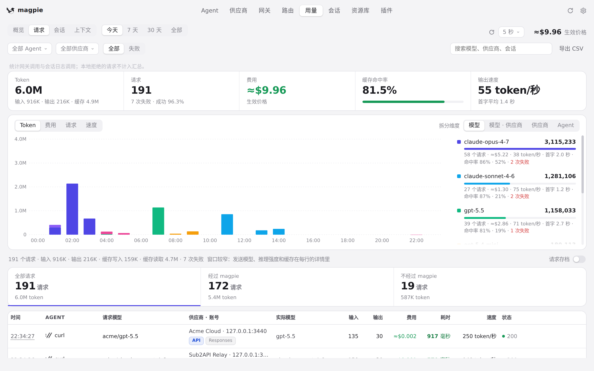

#1122 界面预览
commit 372a90e · 回到 PR · 供应商里新增 Google Vertex AI 预设：它的编辑器用「项目 ID / 位置 / 凭据文件 / 服务账号」取代 API 密钥，端点显示由项目与位置拼出的地址，未填项目时保存会被拒绝；列表行的密钥栏改为显示签名用的凭据来源（服务账号、凭据文件或 Google ADC）或「需要项目」。用量 → 请求的协议标签现在也认得 Gemini 的 streamGenerateContent。
红线是鼠标走过的轨迹，红色圆环是一次点击；底部文字是这一步在做什么。空格暂停，← → 逐段查看。

添加 Google Vertex AI 供应商 · 预设列表里的 Google Vertex AI

添加 Google Vertex AI 供应商 · 编辑器：项目 ID、位置、凭据文件、服务账号，这里没有 API 密钥
 添加 Google Vertex AI 供应商 · 保存时对缺少项目 ID 的提示
添加 Google Vertex AI 供应商 · 保存时对缺少项目 ID 的提示

添加 Google Vertex AI 供应商 · 端点一栏按项目与位置拼出的地址
 添加 Google Vertex AI 供应商 · 列表末尾新增的 Google Vertex AI 行，看它密钥一栏显示的内容
添加 Google Vertex AI 供应商 · 列表末尾新增的 Google Vertex AI 行，看它密钥一栏显示的内容

用量 → 请求的协议标签 · 用量 → 请求：每行请求显示的协议标签